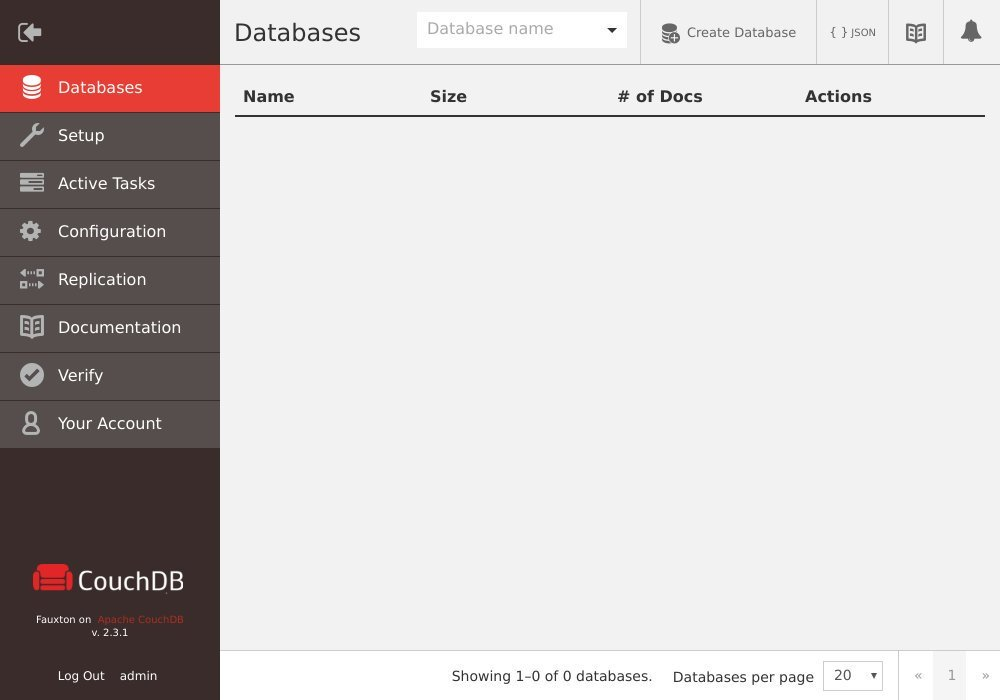

在 CentOS 8 上安装 CouchDB
Apache CouchDB 是由 Apache 软件基金会开发的免费开放源代码 NoSQL 数据库。它可以用作单节点数据库或集群数据库。在本文中，我们将介绍在 CentOS 8 上 CouchDB 的安装。
CouchDB 服务器将其数据存储在命名数据库中，该数据库包含 JSON 结构的文档。每个文档都包含许多字段和附件。字段可以包括文本，数字，列表，布尔值等。它包含一个 RESTful HTTP API ，使您可以读取，创建，编辑和删除数据库文档。
启用 CouchDB 存储库
在 CentOS 8 上安装 CouchDB 的最简单方法是启用供应商存储库并安装二进制软件包。
以 root 用户或具有 sudo 特权的用户打开您选择的编辑器，然后创建 CouchDB 存储库文件：
sudo nano /etc/yum.repos.d/bintray-apache-couchdb-rpm.repo
将以下内容粘贴到 /etc/yum.repos.d/bintray-apache-couchdb-rpm.repo 文件中：
[bintray--apache-couchdb-rpm]
name=bintray--apache-couchdb-rpm
baseurl=http://apache.bintray.com/couchdb-rpm/el$releasever/$basearch/
gpgcheck=0
repo_gpgcheck=0
enabled=1
保存文件并关闭编辑器。
在 CentOS 上安装 CouchDB
通过运行以下命令来安装 CouchDB 软件包：
sudo dnf install couchdb
安装完成后，启用并启动 CouchDB 服务：
sudo systemctl enable --now couchdb
配置 CouchDB
可以以单节点或群集模式设置 CouchDB 。在此示例中，我们将以单节点配置部署服务器。查看有关如何以群集模式设置 CouchDB 的官方文档。
您可以使用 Fauxton 在 http://127.0.0.1:5984/_utils#setup 或从命令行配置 CouchDB 。安装向导将指导您完成模式选择和管理员创建。
我们将从命令行创建 admin 用户和数据库。
Apache CouchDB 数据和配置文件存储在该 /opt/couchdb 目录中。要创建管理员帐户，请打开 local.ini 文件，然后 [admins] 在格式的部分下添加一行 username = password 。
sudo nano /opt/couchdb/etc/local.ini
文件： /opt/couchdb/etc/local.ini
[admins]
admin = mysecretpassword
重新启动 CouchDB 服务以将密码更改为哈希：
sudo systemctl restart couchdb
您可以使用相同的格式来添加多个管理员帐户。添加新帐户后，请务必重新启动 CouchDB 服务。
使用 curl 创建系统数据库 _users ， _replicator 以及 _global_changes ：
curl -u ADMINUSER:PASS -X PUT http://127.0.0.1:5984/_users
curl -u ADMINUSER:PASS -X PUT http://127.0.0.1:5984/_replicator
curl -u ADMINUSER:PASS -X PUT http://127.0.0.1:5984/_global_changes
每个命令应返回以下内容：
{"ok":true}
验证 CouchDB 安装
CouchDB 服务器正在运行 localhost:5984 。要验证安装是否成功以及服务是否正在运行，请运行以下 curl 命令，该命令将以 JSON 格式打印有关 CouchDB 数据库的信息：
curl http://127.0.0.1:5984/
为了清楚起见，下面的输出是格式化的。
{
"couchdb":"Welcome",
"version":"2.3.1",
"git_sha":"c298091a4",
"uuid":"5e3878666b1077eb9d4a7ba7b06c251b",
"features":[
"pluggable-storage-engines",
"scheduler"
],
"vendor":{
"name":"The Apache Software Foundation"
}
}
如果您更喜欢 GUI ，则可以在以下位置访问 CouchDB 基于 Web 的界面 Fauxton ：
http://127.0.0.1:5984/_utils/

结论
我们已经向您展示了如何安装 CouchDB CentOS8 。下一步是访问 Apache CouchDB 文档并找到有关此主题的更多信息。